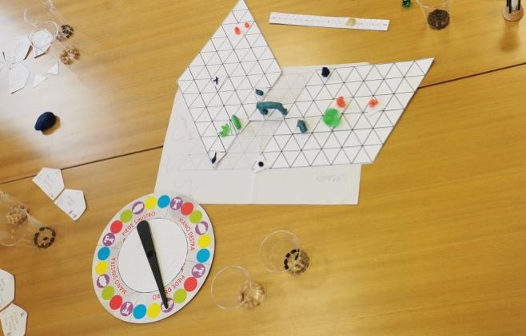

Chapter II
The Firenze session was the first SPES game run in Italy. Four students — two in their early twenties, one in his late thirties, one in his mid-twenties — met at the university on an afternoon in March and played for three hours. Andrea and Toa, the GMs, opened with a short introduction to the SPES project and Work Package 8, then laid out the board: two grids, a river, a wilderness beyond, and the usual starting allocations of land, money, and a handful of externalities that each player carried in from round zero.
The group skewed serious. All four were studying development, sustainability, or cooperation. They read the game as an opportunity to think out loud about the things they already thought about, and it showed: almost every move in the session was justified in terms of social or environmental value rather than private return. The session also produced more infrastructure than any other SPES game on record — by the end of round four, the board held a school, an urgent-care clinic, a sports centre, a hydroelectric plant, a recycling centre, a research centre, a railway with a bridge, a green area run by a social cooperative, an organic-farming fund, a library of objects, a five-star hotel, an electric vehicle fleet, a migrant housing-and-training facility, an M&E unit, and a dam under construction.
The opening round set the tone. Each player picked a role and placed something on the board that was public, or at least public-serving.
The first player chose to be a teacher and founded a primary school in the peri-urban area. Mixed-age classes; the building stayed open after hours for extracurricular activities. The dice gave a modest 40 on the d100 — a slow start, but the school held.
The second player framed themselves as an entrepreneur and opened an urgent-care clinic for minor injuries — white and yellow codes only, with severe cases transported to the city. The need for a transport link would come up again two rounds later.
The third player, a retired flight instructor, invested two lands in a multi-purpose sports centre. Free to everyone. The stated purpose was to give young people something to do and steer them away from crime — a framing that reads as distinctly Italian, and that quietly anticipated the "social tensions" the group would flag in its own scoring discussion at the end of the round.
The fourth player — also an entrepreneur — built a hydroelectric plant on the river, reading its strong current as an energy resource. This was the session's first private-for-profit investment, and its first big success: a d100 of 80 delivered a generous yield.
The group voted their own social value for the round at 2 — not the maximum. They were already worrying that the sports centre and clinic might "create social tensions" depending on how they were run. The worry would recur throughout the session: good facilities do not automatically produce good societies. How you use them matters.
Round two is when the session found its character.
Three players expanded or added: a school bus to extend the school's reach, a public waste-collection and recycling centre in the urban area, a research centre funded through Italy's National Recovery and Resilience Plan (PNRR) with scholarships to draw students from out of town and an expectation that private investors would follow.
The fourth player called the session's first assembly. The proposal was ambitious: a train line between city and countryside, requiring a bridge, publicly funded. The GMs ruled the project would generate three externalities during construction but subtract six beans from the common pot per turn afterwards — a long-term environmental gain at a short-term cost of four chickpeas' maintenance per round.
The discussion was short but thorough. Would the line be long enough to actually replace commuting? Would the hydroelectric company supply its power? Should tourism — likely to increase — be welcomed or resisted? Players split on the last point and ultimately landed on "the benefits outweigh the disadvantages," though without enthusiasm. Unanimity was required; unanimity was granted. The railway was built.
The wheel was then spun for the first collective event. A drought.
What followed is one of the more interesting moments of the session. The GMs offered four possible responses at four different price points — public awareness at 2 chickpeas, targeted irrigation at 11, research-centre investment at 5, solar panels on the existing power plant at 12. The players, again requiring unanimity, chose only the cheapest option: public awareness. They debated the agricultural and technological responses seriously, but in the end they went with education.
There is an argument to be made that this was the Italian session's most revealing single decision. The cheapest intervention was also the one that required the least collective commitment and the least institutional risk. Four students who had just enthusiastically financed a railway flinched at a drought policy that would have cost them real chickpeas. The score ticked up by one to 3, but the round ended with a lighter wallet than the room felt comfortable spending.
Round three added texture.
The first player turned a patch of urban public land into a green area — playground, picnic space, greenhouses for research and student projects — and handed it to a social cooperative to manage. The second player, worried about the drought, set up a fund for organic farmers: own money, 40% of profits retained, 60% given back.
The third player called the second assembly. A library of objects in the city, to reduce consumption — an idea borrowed from existing ARCI Circles and municipal libraries, funded from the public pot. Four chickpeas. Unanimity again. Passed.
The fourth player, meanwhile, doubled down on private initiative and built a five-star luxury hotel in the urban area. Reasoning: the railway had reduced profits, the drought was ending, tourism would rebound. A helipad for emergencies was added in a flourish of post-hoc civic-mindedness.
The wheel was then spun for an individual event — and the fourth player drew a market crash. The electricity plant and the hotel both froze. The third player, sensing an opening, proposed a deal: "Could you donate part of the hotel to us? We'll sign an agreement to use the power plant for research, and external faculty can stay there." The fourth player declined. No deal. Both sides sat on stagnant assets for the rest of the round.
The score ticked up by another one. Total social value: 4.
By round four, the group was thinking in terms of systems rather than projects.
The first player called assembly three: convert the school bus fleet to electric vehicles, and use electric vehicles for the clinic-to-hospital transfers. Public-funded, with personnel costs covered by the player. A counter-proposal came back from the room: why stop there? Nationalise the electricity plant. Invest in renewable energy. Do both. The vote passed. The hydroelectric plant, built privately in round one, became public property in round four.
The second player called assembly four: housing for homeless people, including newly arrived migrants, funded publicly. The counter-proposal reframed the problem sharply: "Isn't it better to give them a job? Let's pay for their training courses. Not just a temporary solution, but a long-term one." The final decision combined both: housing and training in a single new facility. Six chickpeas. Four externalities removed. Unanimous.
The third player, now short on cash, borrowed from the fourth player — no interest — and called assembly five: create an operational unit for monitoring and evaluating development projects at the research centre. Six chickpeas, one chickpea per turn in maintenance, four beans removed from the pot. The M&E unit was established.
The fourth player, now without an electricity plant but still holding the railway, the bridge, and the hotel, tried one more move: planning a dam. No land left to build on, so they took out a loan to buy land, then mortgaged the hotel to fund the dam itself. The round ended before the dam could finish.
The final wheel spin delivered a Rural Infrastructure Act — a collective event that would expand the road network. The group responded by proposing protected rural zones, pedestrian pathways, and incentives for private electric vehicles.
The round closed at a social value of 6. Total beans accumulated: 36, well below the 50-point threshold at which society would have collapsed. One player had the most private wealth — 26 chickpeas and 13 beans — but, remarkably, no one had ever asked how to win the game. The question of individual victory had simply not arisen. The group had spent three hours playing as a community, not a collection of competitors.
The focus group ran 50 minutes after a short break. Andrea and Toa walked the group through the SPES triad of problems, aspirations, and policy solutions — the standard post-game frame used across all seven countries. The answers were condensed, articulate, and clearly rehearsed from a year of development-studies coursework.
The problems the group named were familiar: limited resources for social investment, entrepreneurs prioritising private profit over collective wellbeing, pollution, excessive tourism, traffic and inadequate public transport, homelessness, road expansion into rural areas, drought, student housing shortages, corruption.
Their aspirations were equally a map of what they had built on the board: renewable energy, education adapted to local (especially rural) contexts, guaranteed first-aid access, social cohesion through multipurpose centres and green public space, reuse and sharing through object libraries, eco-friendly and affordable public transport, public waste collection and recycling, research-and-development for sustainable solutions, incentives for eco-friendly private mobility, housing and training for migrants and people in poverty, redirection of public funds toward social and environmental priorities rather than private profit, and a strong turn toward public assemblies as the mechanism for deciding such things.
The thematic overlap between the game board and the focus group was almost exact. The Firenze players did not, by and large, play out positions they then renounced in the debrief; they played the society they said they wanted, and then told us what they had built.
Firenze is the cleanest SPES session on file. Four well-prepared students played an informed, collective, public-infrastructure-heavy game and produced a society with high social value and moderate externality accumulation. The decision-making was consistently collaborative; five assemblies were called in four rounds; unanimity was reached every time it was required.
What the session gains in coherence, it gives up in friction. No one played an adversary. No one tried to privatise a common good. The one player who built for profit accepted the nationalisation of their plant in round four without protest. It is difficult to tell, from this game alone, what would happen if the room had included — as later SPES sessions would — a farmer worried about their next harvest, a migrant worker negotiating entry, or a participant who did not already share the group's vocabulary of "externalities," "social cohesion," and "sustainable mobility."
What Firenze shows clearly is something else. Given a group of young people who already think structurally about sustainability, and a game that lets them act on that thinking, they build the society they have been trained to want. The drought decision suggests that even a prepared group will reach for the cheapest intervention when the group's own chickpeas are on the line. The unanimity requirement, more than any other rule, shaped what got built. And nobody, in three hours of earnest play, ever asked how to win.

· · ·